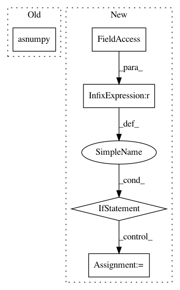

d15a15df582f43d9bc65a434db0d64c9e276b724,python/magent/builtin/mx_model/dqn.py,DeepQNetwork,infer_action,#DeepQNetwork#Any#Any#Any#Any#,136
Before Change
data_batch = mx.io.DataBatch(data=[mx.nd.array(view), mx.nd.array(feature)])
self.model.forward(data_batch, is_train=False)
qvalue_batch = self.model.get_outputs()[0]
best_actions = mx.nd.argmax(qvalue_batch, axis=1).asnumpy()
random = np.random.randint(self.num_actions, size=(n,))
cond = np.random.uniform(0, 1, size=(n,)) < eps
ret = np.where(cond, random, best_actions)
After Change
eps = 0
n = len(view)
if n < self.num_gpu:
view = np.tile(view, (self.num_gpu, 1, 1, 1))
feature = np.tile(feature, (self.num_gpu, 1))
batch_size = min(len(view), self.infer_batch_size)
self._reset_bind_size(batch_size)
best_actions = []
infer_iter = mx.io.NDArrayIter(data=[view, feature], batch_size=batch_size)
In pattern: SUPERPATTERN
Frequency: 3
Non-data size: 5
Instances
Project Name: geek-ai/MAgent
Commit Name: d15a15df582f43d9bc65a434db0d64c9e276b724
Time: 2017-11-23
Author: zhenglianmin96@163.com
File Name: python/magent/builtin/mx_model/dqn.py
Class Name: DeepQNetwork
Method Name: infer_action
Project Name: dmlc/dgl
Commit Name: 57b07fce920c11a0788cd1c97d529a51d006db3d
Time: 2018-12-02
Author: zhengda1936@gmail.com
File Name: examples/mxnet/sse/sse_batch.py
Class Name:
Method Name: main
Project Name: dmlc/dgl
Commit Name: a1038eb1eef89961f9880865828e7db85e47ad0f
Time: 2018-09-19
Author: wmjlyjemaine@gmail.com
File Name: python/dgl/utils.py
Class Name: Index
Method Name: tolist